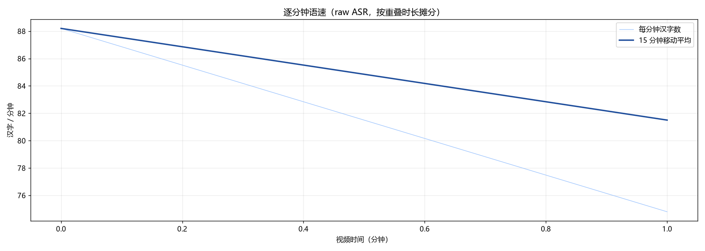
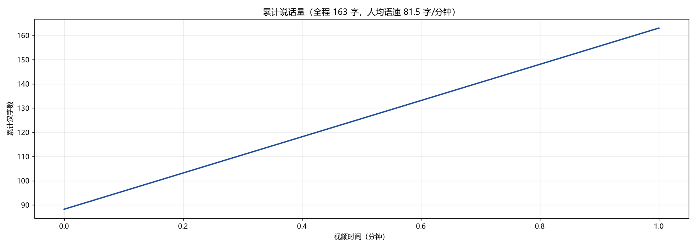
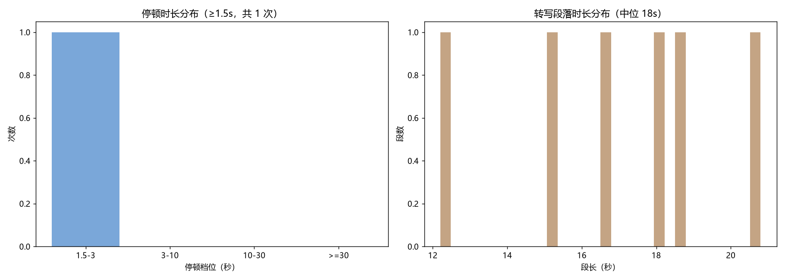
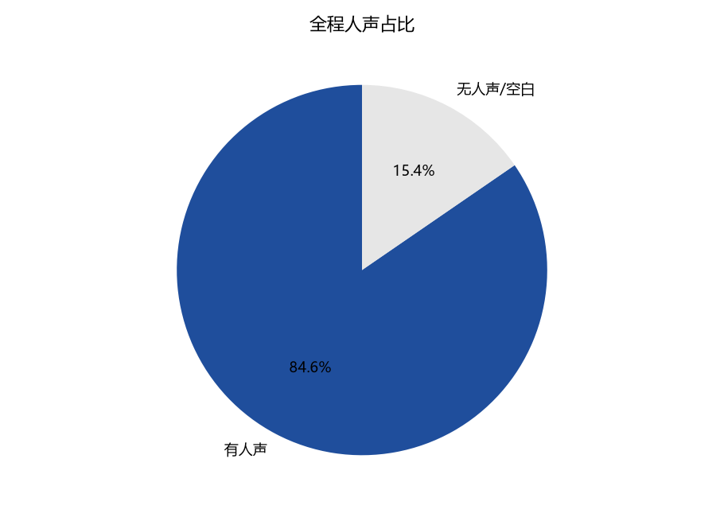

这是一份合成数据的最小示例，用来演示杂志风报告长什么样、以及「数据自动填 + 文案手写」怎么分工。
它跑通的是非媒体阶段：切片 → 大纲合并 → 纠错裁决 → 可读稿 → 统计 → 校验 → 出片。转写与抽帧认字需要真实音视频，见本目录 README。
按「在干什么」把这段话切开，归到类型里。示例只有 2 个主题，但表格、占比条、时间线都是从大纲数据里现算的——真实长视频只是行数更多。
| 在干什么 | #时长 | #占比 | 占比条 |
|---|---|---|---|
| 正题 | 72s | 70.8% | |
| 开场 | 30s | 29.2% |
| 从 | 到 | #多久 | 在干什么 | 内容 |
|---|---|---|---|---|
| 00:00:06 | 00:00:36 | 30s | 开场 | 评审范围与登录模块 |
| 00:00:36 | 00:01:48 | 72s | 正题 | 订单与结算模块的改动与风险 |
| 点了直接看 | #多久 | 在干什么 |
|---|---|---|
| 订单与结算模块的改动与风险 | 72s | 正题 |
| 评审范围与登录模块 | 30s | 开场 |
content/outline.json，改数据不用改模板。content/magazine-copy.json）里的句子才是手写的。举个例子（大纲里的一段）：「评审范围与登录模块」在 00:00:06–00:00:36（30 秒，2 个点）：
00:00:06 本次评审范围只有登录、订单、结算三个模块 00:00:18 登录模块会议纪要已发群，要求未读者补齐
字数、语速、停顿、提问句、词频、口头禅、领域词命中 —— 示例里数字都很小，但口径与真实长视频完全一样。
| 看什么 | #数字 | 说明 |
|---|---|---|
| 分成多少段 | 6 段 | 全片 00:02:00 |
| 总字数（含标点） | 181 | |
| 汉字 | 163 | |
| 说得多快 | 81.5 字/分钟 | |
| 有人说话的时间 | 101.5s | 占 84.6% |
| 第一句话在第几秒 | 6.2s | 跳到第一句话 |
| 停顿超过阈值次数 | 1 次 | 1.5-3 1 次、3-10 0 次、10-30 0 次、>=30 0 次 |
| 最长的一次停顿 | 1.9s | 在 00:00:36 前后 |
| 提问句 | 0 次 | 平均每分钟 0.00 次 |




统计去掉了虚词，完整榜单见 stats/top-words.csv。
| 口头禅 | #次数 | 口头禅 | #次数 |
|---|---|---|---|
| 模块 | 5 | 一个是 | 2 |
| 这次 | 3 | 一下 | 2 |
| 三个模块 | 2 | 登录 | 2 |
| 重复下单 | 2 | 订单 | 2 |
| 模块的 | 2 | 结算 | 2 |
口径提醒：统计只用原始转写。修正稿与屏幕认字结果都不参与统计。
| 怎么数 | #汉字 | #字母数字 | #字/分钟 |
|---|---|---|---|
| 原始稿（报告用的是这个） | 163 | 0 | 81.50 |
| 压掉重复后（仅作对照） | 163 | 0 | 81.50 |
示例里埋了一个「真词陷阱」：评审→评议 看着像错字，但「评审」本身就是正常词，所以被自动拒绝。
原始稿里有 0 段出现同一串被重复写成一大串，共移除 0 字。压掉重复后再数一遍，语音密度只差 0.0%，所以主数字仍用原始稿。
| 本来想改成 | 结论 | 为什么 |
|---|---|---|
| 评审 → 评议 | 不改 | 示例：评审在本文里就是正确用词，明确拒绝替换为「评议」 |
改动最多的几处：记要→纪要 1 次
content/corrections.jsonl，附理由——「为什么没改」和「改了什么」一样重要。| 想问的问题 | 去哪找数据 |
|---|---|
| 想跑真实视频 | 改 config.json 的 media（BV 号或本地文件），然后 python pipeline.py --stages all |
| 想知道每个数字怎么算的 | references/口径模板.md |
README.md —— 统计口径与复现步骤transcripts —— 原始转写（所有统计的唯一依据）/ 逐字稿 / 修正稿content/outline.json —— 两级内容大纲（主题 + 知识点）content/outline-points.csv —— 知识点长表（Excel / pandas 直接开）content/corrections.jsonl —— 错字逐条记录与裁决结果stats/language-stats.json —— 说话、语速、停顿、词频全量stats/per-minute.csv —— 逐分钟序列stats/top-words.csv —— 词频与领域词命中stats/figures —— 报告里的图表magazine.html —— 本文件（杂志版报告）